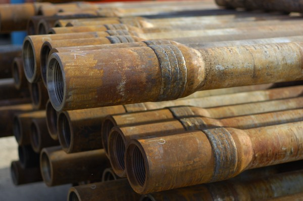

Нанесение износостойкого покрытия замковых соединений
ООО ПКФ «ПромТехСервис» предлагает Вам наилучшие решения для Вашего бурового инструмента.
Продление срока эксплуатации бурильной трубы в 3 раза.
Уменьшение сроков бурения.
Снижение энергозатрат.
Решение для Вас и Ваших подрядчиков одно – это нанесение и восстановление противоизносного покрытия замковых соединений бурильных труб. Эффект достигается за счет уменьшения площади соприкосновения бурильной и обсадной колонн, бурильной колонны – с открытым грунтом. Уменьшение трения ведет к увеличению производительности и снижению износа замковых соединений и обсадной колонны. Также значительно снижается вероятность аварийности из-за фатального износа стенки обсадной колонны при глубоком и/или направленном бурении.

Стандартная схема наплавки.

Ширина наплавки на муфте LB – 101,6 мм
Ширина наплавки на нипеле LP – 50,8 мм
Высота наплавки H – 3,2 мм
Нанесение износостойкого покрытия позволяет увеличить срок эксплуатации стальной бурильной трубы в 3 раза!